You reported the section headers were invisible in dark mode. They were: the card kept a light green fill while the labels followed the dark theme ink, so they rendered near-white on near-white. Measured, fixed, and re-measured — every label now clears the AA contrast bar in both themes at both widths.
| Was | Now | |
|---|---|---|
| “Your name”, “A photo of you”, “Where are you?” | 1.11:1 | 12.29:1 |
| “Your profile”, “Where you are” | 1.10:1 | 10.58:1 |
| “While you are here — who sees this?” | 1.10:1 | 10.58:1 |
| “This is optional…” (failed the other way — dark on dark) | 1.88:1 | 9.66:1 |
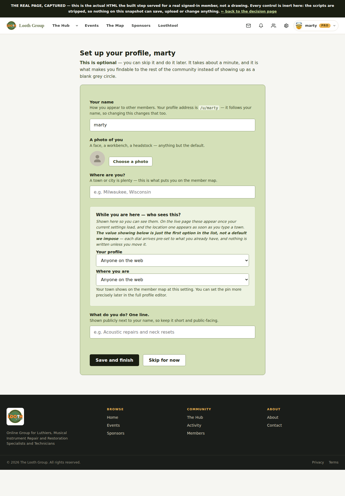
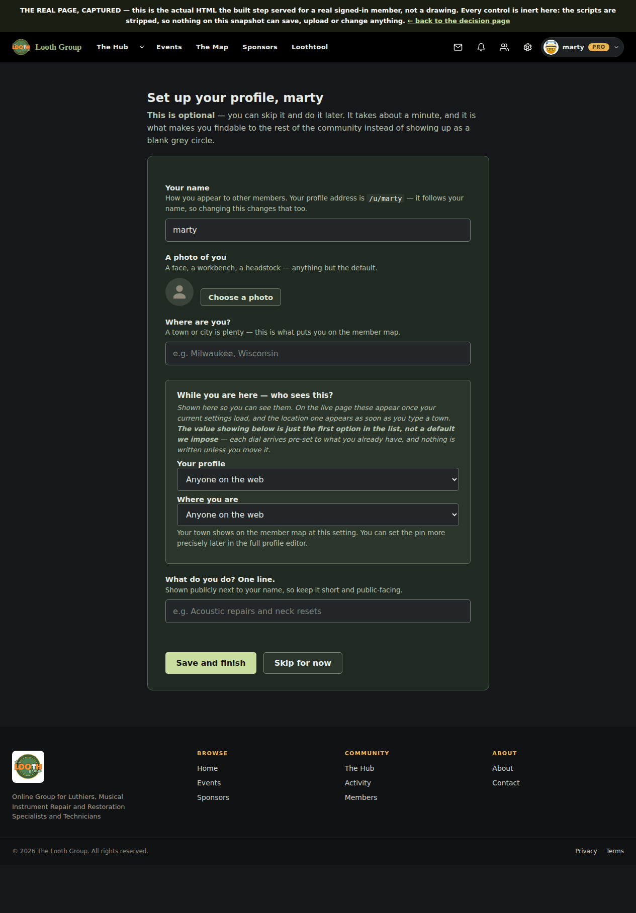
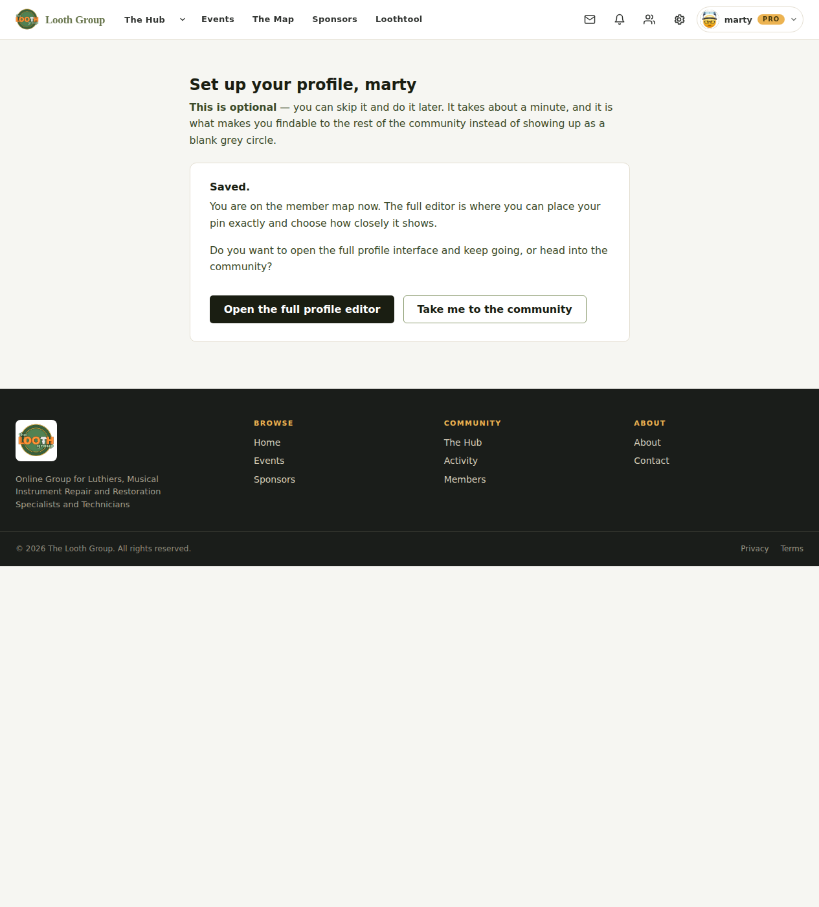
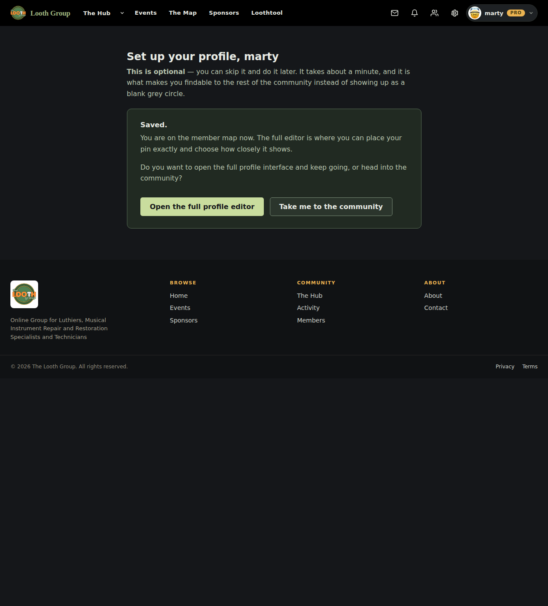
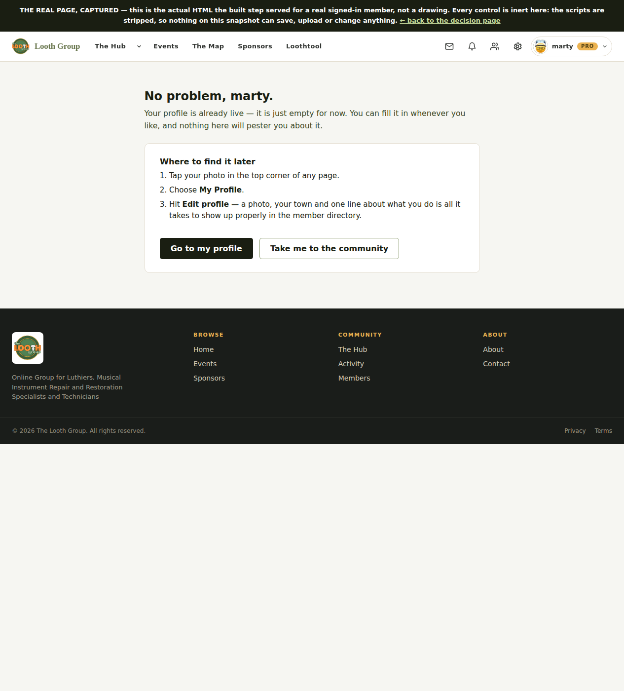
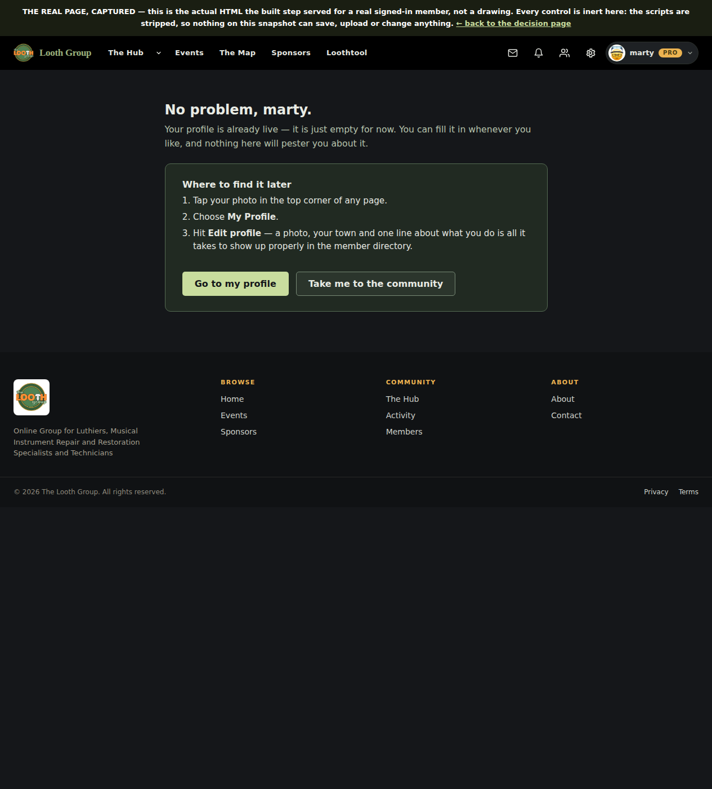
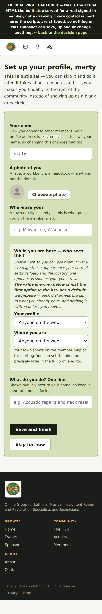
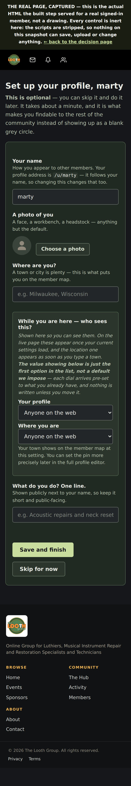
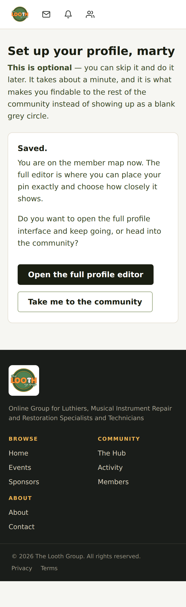
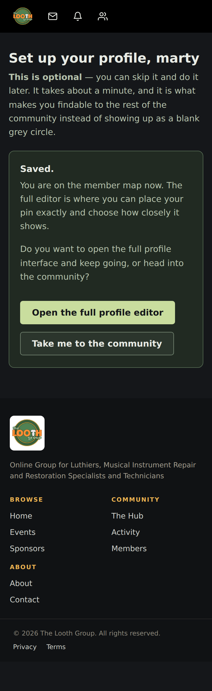
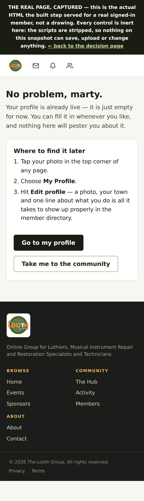
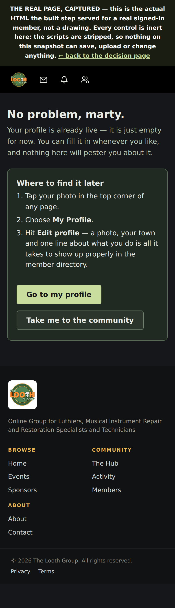